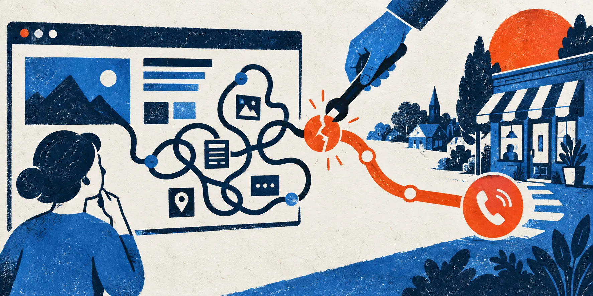
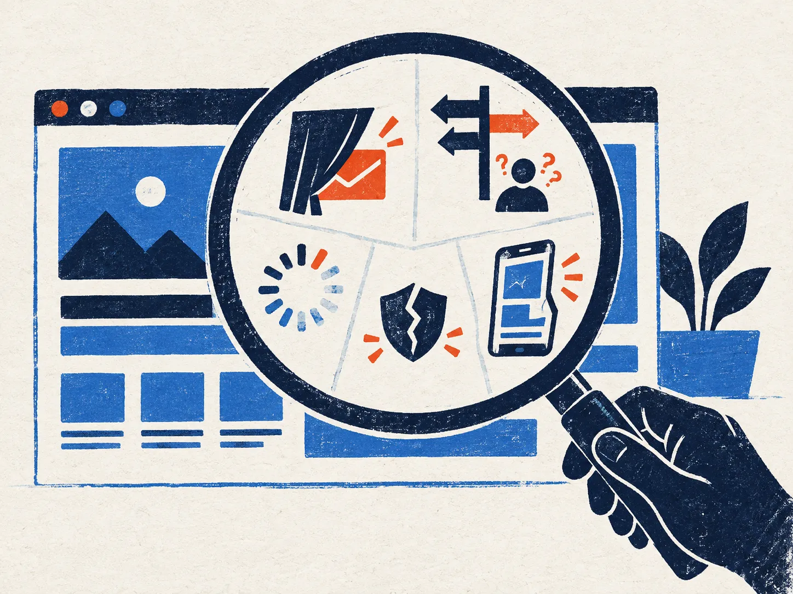

One agreed outcome
One landing page, enquiry path, mobile flow, or other critical journey.
Website rescue for established service businesses
We find where serious prospects hesitate, get lost, or give up—then fix only that path. No full rebuild unless the evidence says you need one.

Start with evidence
We review the real site, mark the exact friction, explain the business impact, and show the smallest credible fix.

What we actually inspect
Can the right customer tell what you do and who it is for?
Is the proof close enough to the decision it supports?
Can a visitor call, book, or enquire without hunting?
Does the critical task still work with one hand?
Do forms, contact actions, and basic tracking work reliably?
The flagship offer
Choose the page or journey that matters most. We clarify the offer, redesign the interaction, implement the fix, and verify it across devices.
One landing page, enquiry path, mobile flow, or other critical journey.
The fix is not handed between separate copy, design, and development teams.
Anything outside the agreed path becomes a visible next decision.
This is probably for you if…
Three visible decisions
Tell us the one customer action that matters most.
We mark what is observable and agree on one outcome.
You see it working in the browser before the work is called finished.
No agency relay.
No hidden lock-in.
No redesign by default.
Your files, domain, and agreed work stay yours.
Start with the page that matters
We’ll recommend the smallest useful next step—an audit, one rescue sprint, or nothing yet.